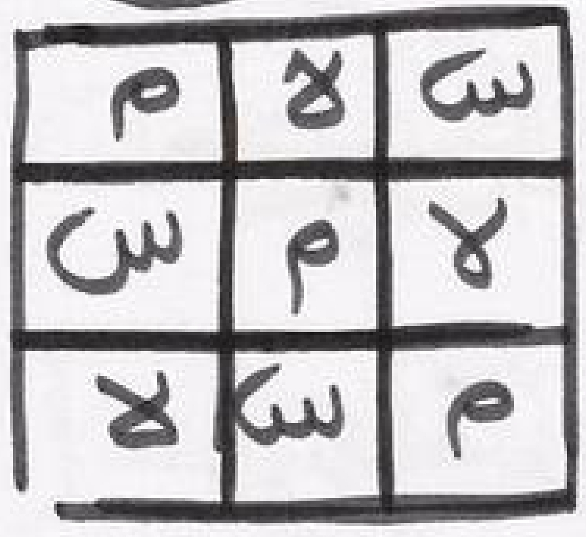

Wannan sirrin ba yawa sai zafi, kuma sirrine boyayye gwadajje wanda iyaye da kakanni suke tasrifi dashi ma'ana suke aiki dashi, Wannan sirrin ko yaki akeyi idan kayi aiki dashi zaka ga ikon Allah zaka fito cikin salama kai ko ina ka shiga zaka futo cikin salama insha Allahu Rabbi. ana rubuta wannan hatimin ayi laya dashi a rataya a jiki wannan ko yaki akeyi sai ka futo lafiya.
By Muawiya Muzzy | 25 Feb 2025
All Right Reserved